ROG-STRIX-RTX2060S-O8G-GAMING
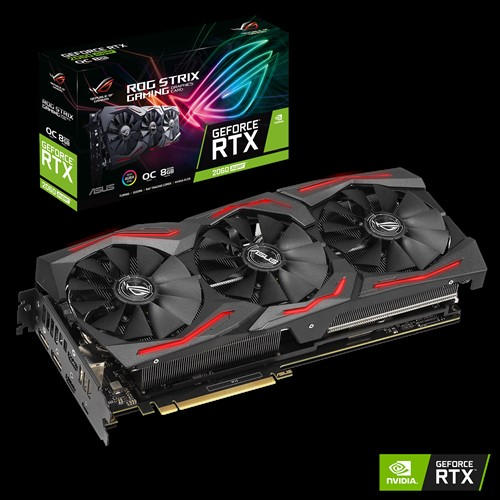
RT 核心 專屬光線追蹤硬體可藉由即時光線追蹤技術，更快速地產生物理上精準的陰影、倒影、反射、折射和全域照明。
同步浮點運算和整數運算處理 可讓 Turing GPU 針對現今運算工作負載繁重的遊戲提升處理效率。
超高速GDDR6 高達 496 GB/s 內存記憶，適用於高速、高更新率的遊戲 。
MaxContact 技術 讓散熱器表面與 GPU 晶片的接觸面增加 2 倍，進而有效轉移熱度。
Aura Sync 燈效模組 可與支援此技術的硬體串接，打造可淋漓演繹個人獨特的電競主張。
ASUS FanConnect II 配備 2 個混合控制風扇插座，可提供最佳系統散熱效果。
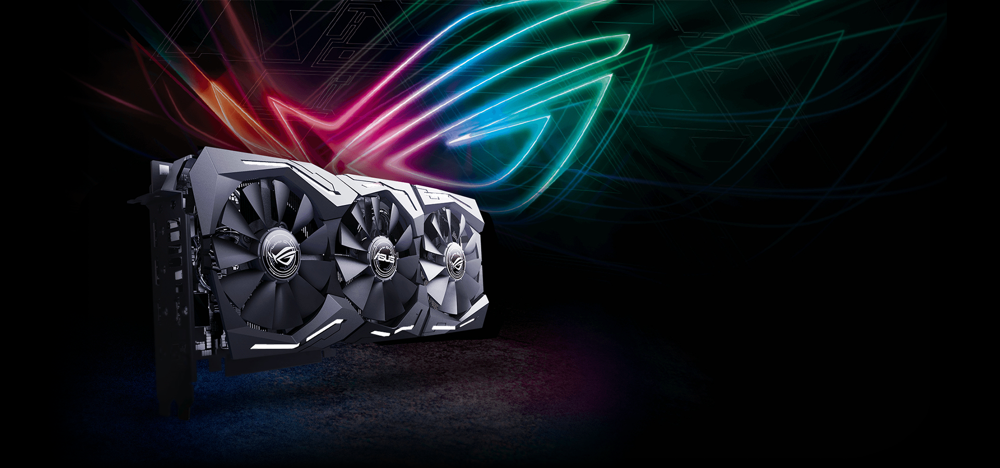
完勝顯卡 效能全制霸
ROG Strix GeForce® RTX 2060 SUPER™ 與前代顯示卡相比，擁有更多CUDA核心和VRAM，並搭載強大的電量和出色散熱性能，為史詩級遊戲經驗打造適合環境。充沛的電力確保超頻能順利突破限制，臻於完美境界的散熱能力造就絕不妥協的 Turing™ 效能。另有多種公用程式可供您自由自訂及調校這款極致硬體。讓您AAA遊戲，讓您完勝戰場制霸巔峰。
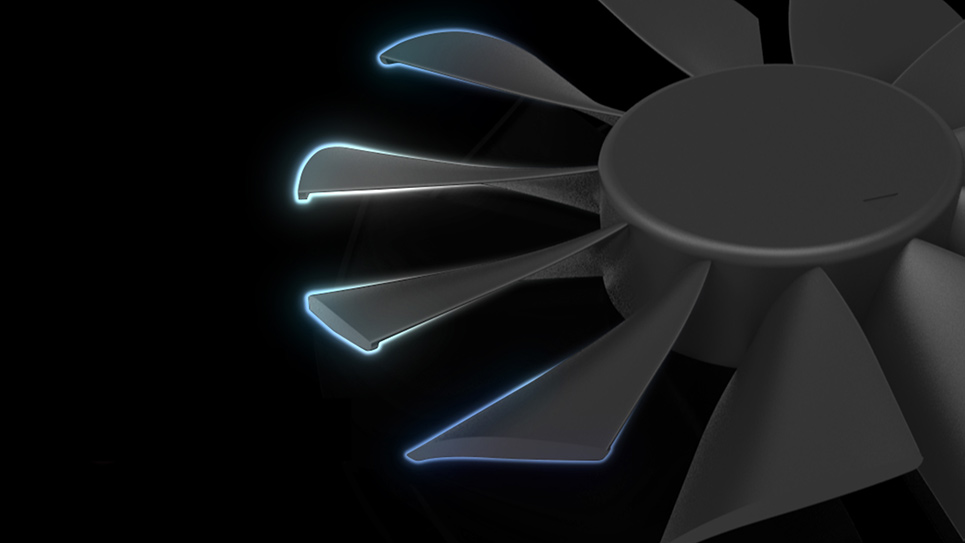
專利翼型葉片風扇
增加氣流量提高散熱消能
專利翼型風扇在每個扇葉增加垂式尖端設計，以減少阻力並增加翼展，更加節省空間。
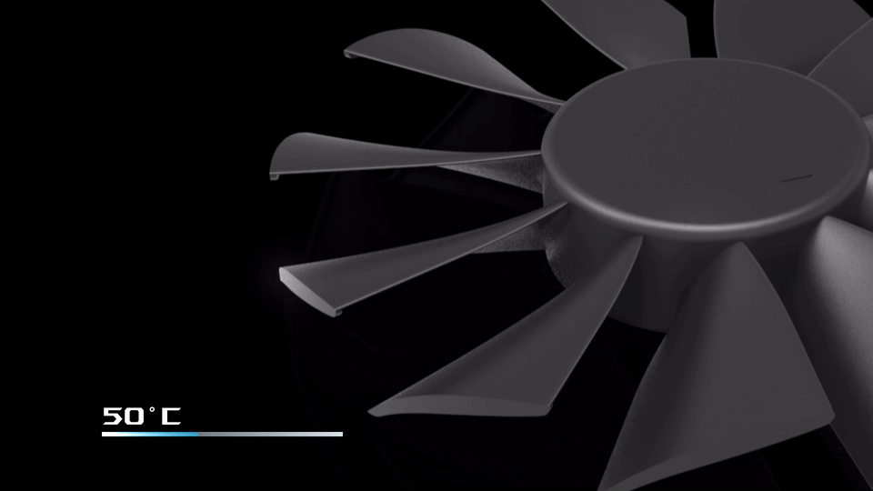
0dB 技術
靜享遊戲體驗
0dB 技術可在 GPU 核心溫度維持在 55 °C 以下時，完全停止軸向式風扇運轉，讓玩家在毫無噪音的情況下暢玩遊戲。風扇會在溫度上升時自動重新啟動。
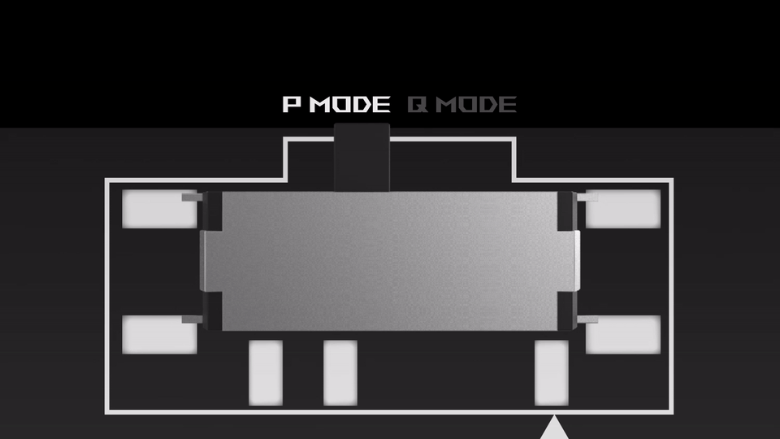
雙 BIOS
智慧之選
究竟是低核心溫度比較重要，還是低噪音更重要？ 效能模式會調高風扇轉速，以在顯示卡運作時全程降溫。 靜音模式的功率目標與頂級設定不變，但風扇運轉的激烈程度較低，以在中溫程度確保靜音運作。 如需更多的自訂及控制功能，請使用 GPU Tweak II 軟體。
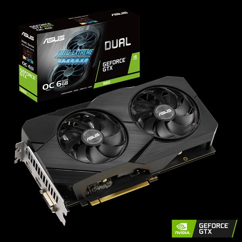
GeForce® GTX 1660 具有獲獎無數的 NVIDIA Turing™ 架構的突破性繪圖效能。
成為專業實況主： GTX 1660 的專用硬體編碼器針對 Open Broadcaster Software (OBS) 進行優化。
GeForce Experience 讓您擷取並與朋友分享影片、螢幕截圖和即時串流，讓 GeForce 驅動程式保持最新狀態，以及輕鬆將遊戲設定最佳化。
軸向式風扇:搭載更大的扇葉和獨特的環形密封環，以增加
軸向式風扇:搭載更大的扇葉和獨特的環形密封環，以增加氣壓。
144 小時驗證方案讓顯示卡經歷一連串的嚴格測試，確保與最新遊戲的相容性。
GPU Tweak II 提供直覺式效能調整、溫度控制和系統監控。
實用軟體
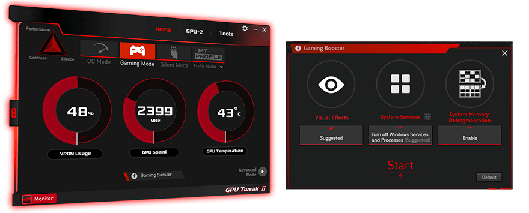
GPU Tweak II
監控、調校及微調
ASUS GPU Tweak II 公用程式將顯示卡微調帶入全新境界。 您可以調校 GPU 核心時脈、記憶體頻率、電壓設定等關鍵參數，也可以透過可自訂螢幕顯示即時監控一切。 還包括進階風扇控制等功能，助您充分利用顯示卡。
量子雲端
運用閒置 GPU 資源獲得額外收益
量子雲端 (Quantum Cloud) 是一項簡單、安全的服務，讓您貢獻閒置 GPU 的運算能力，輕鬆賺取外快。 您的電腦可透過簡單易用的應用程式執行雲端應用程式，在過程中創造收入。 收入會自動轉入您的 WeChat 或 PayPal 帳戶，而您的隱私將受到保護，因為量子雲端不會收集您的個人資料。 立刻開始賺錢！
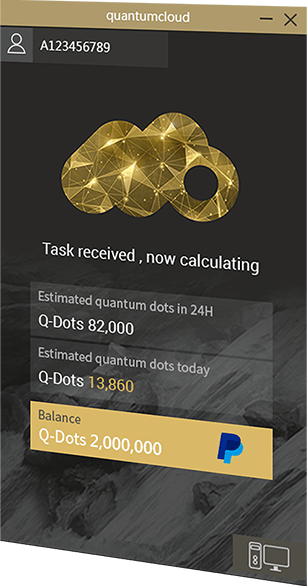
XSplit
優質串流
XSplit 利用遊戲註解及其他先進功能，提供最優質的串流體驗。 凡購買指定 ASUS 顯示卡，即可享有免費授權。 我們線上見！
wtfast
零延滯遊玩
我們與 wtfast 合作，讓您能在遊玩時免於延滯、延遲問題和遺失封包的困擾。 訂閱 6 個月的 wtfast Gamers Private Network，讓您享受更低 Ping 值，體驗更順暢不延遲的線上遊戲。 立刻購買 ASUS 顯示卡 — 大好機會千萬別錯過！
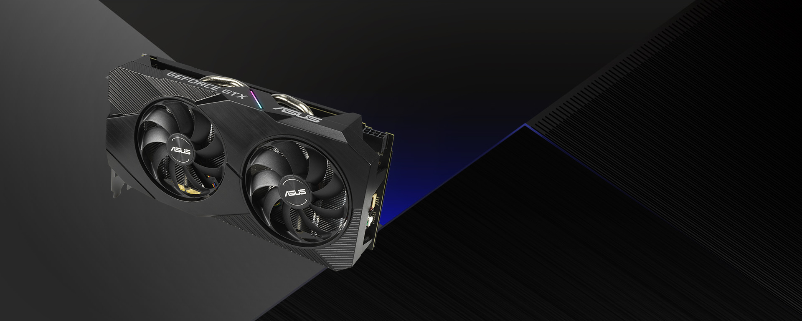
ROG-MATRIX-RTX2080TI-P11G-GAMING
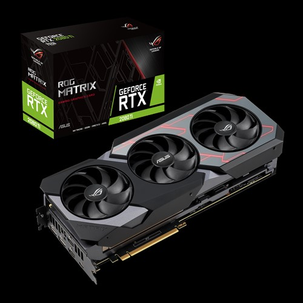
NVIDIA TURING™：ROG GeForce RTX™ 顯示卡搭載 Turing™ GPU 架構和全新 RTX 平台， 提供比前代顯示卡最多高 6 倍的效能，讓即時光線追蹤與 AI 的威能在遊戲中大放異彩。
DirectX 12：支援全新視覺效果及渲染技術，達到更逼真的遊戲體驗。
4K：透過 GeForce RTX 邁向極致的 4K 遊戲體驗，享受最新遊戲大作的精美細節。
全自動製程技術：PCB 板採業界獨家全自動製程提升可靠性
uper Alloy Power II結合高品質合金電感、固態分子電容及多個高電流功率級，為 TURING™ 核心供電。
ASUS FanConnect II配備 2 個混合控制風扇插座，可提供最佳系統散熱效果。
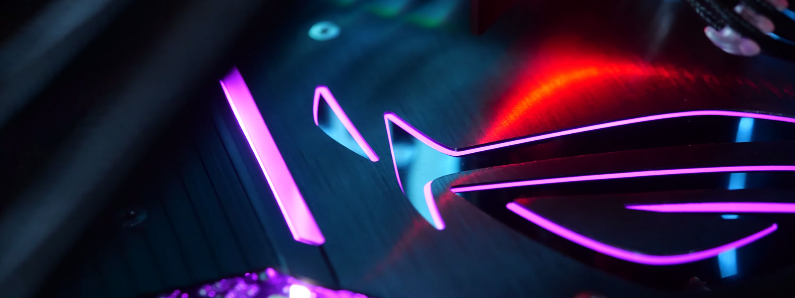
絕佳散熱
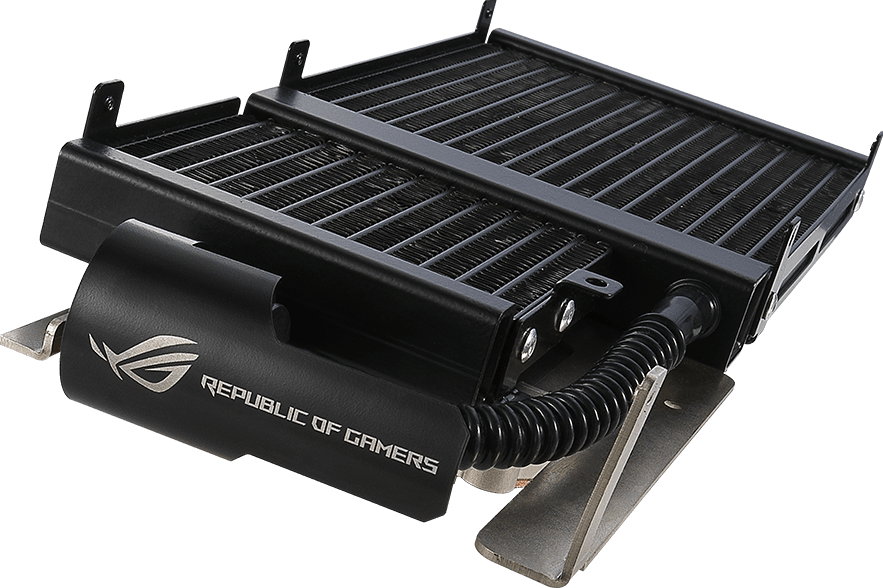
概覽
高效水冷
由於將幫浦、水冷管路和散熱器無縫整合在護蓋下，Matrix 的散熱和靜音效果勝過市面的風冷卡，但佔用的空間相同。 超大散熱器覆蓋 GPU 和 RAM，確保最重要的元件保持低溫。 此外，我們加入三個領先業界的軸向式風扇，將冷空氣推入散熱器，同時替 VRM 散熱。
超大散熱銅底
超大尺寸
微水道銅底可覆蓋 GPU 晶片與 DDR6 記憶體，透過嚴格控制溫度來提高時脈速度。
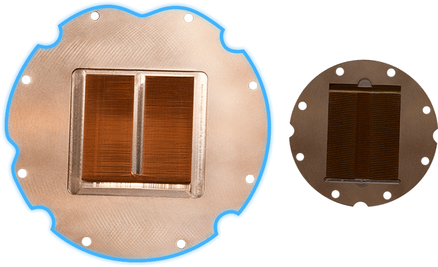
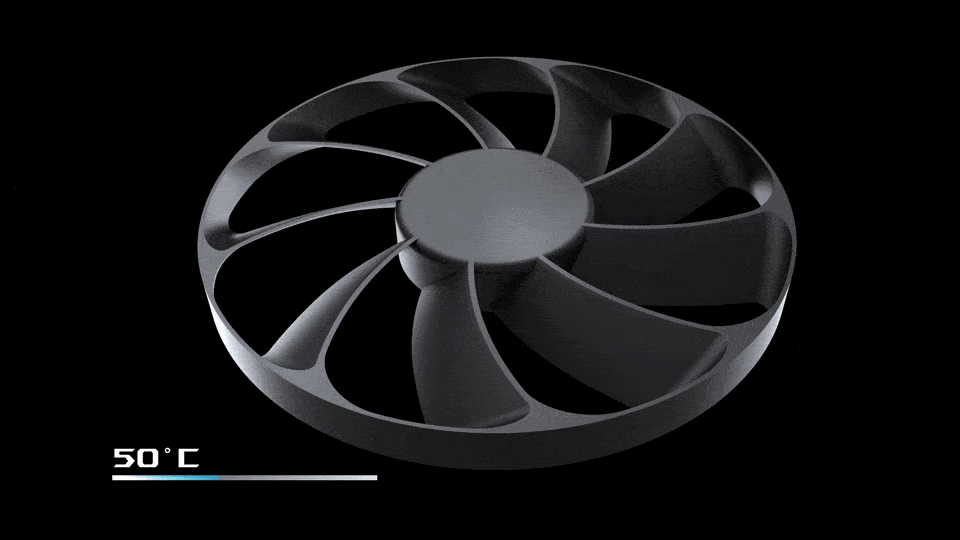
0dB 技術
靜音智慧
水冷的主要優點是噪音低，而 ROG Matrix GeForce RTX™ 2080 Ti 的設計以此為目標。 替散熱器降溫的軸向式風扇可在 GPU 核心溫度低於攝氏 55 度時完全停止運轉，讓您在相對安靜的環境下享受初階遊戲。 風扇會在溫度超過閾值時自動重新啟動。